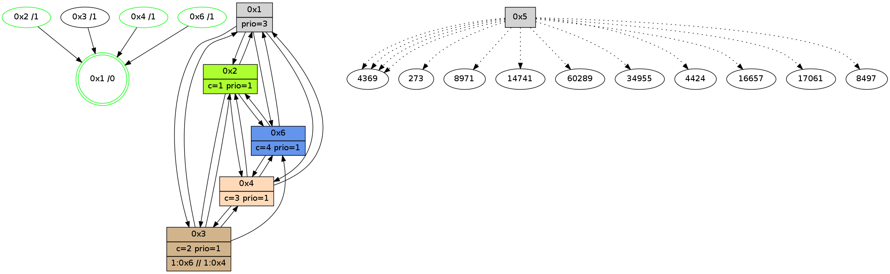

>> << IDX [start] -100 -25 -5 +0 +5 +25 +100 [830.33612299]
 Previous packets
825.000337 [Hello(1): seq=528 sym=2,3,4,6 sysInfo=hasWarning,coloring-mode-on,ColoringModeRequestCalled stat=2:5,8,0,1/3:0,0,0,0/4:0,15,10,2/6:14,9,10,1]
825.003794 [Color(1) seq=55 @0:0 prio=3 c=1;0,2,3,4]
----------------------------------------------------------------------
825.415038 beacon01(adaf) #0 coord=01,02,05,03,04,06 cycle=432.0ms assoc
-- color-indic=1 64 76 a9
825.425000 beacon02(adaf) #0 coord=01,02,05,03,04,06 cycle=432.0ms assoc 64 27 56
825.434999 beacon05(adaf) #0 coord=01,02,05,03,04,06 cycle=432.0ms assoc 64 81 7c
825.444999 beacon03(adaf) #0 coord=01,02,05,03,04,06 cycle=432.0ms assoc 64 1d 58
825.454999 beacon04(adaf) #0 coord=01,02,05,03,04,06 cycle=432.0ms assoc 64 bb 72
825.464999 beacon06(adaf) #0 coord=01,02,05,03,04,06 cycle=432.0ms assoc 64 cf 6e
825.477384 [Color(6) seq=55 @0:0 color=4 prio=1 c=0,1,2;3]
825.479344 [Hello(2): seq=1119 sym=6,4,1,3 sysInfo=hasWarning,coloring-mode-on,ColoringModeIndicationCalled stat=6:3,4,10,4/4:9,11,7,2/1:12,0,11,1/3:10,3,6,0]
825.482477 [Color(2) seq=55 @0:0 color=1 prio=1 c=0,2,3,4]
----------------------------------------------------------------------
825.907145 beacon01(adaf) #0 coord=01,02,05,03,04,06 cycle=432.0ms assoc
-- color-indic=1 64 3a 19
825.917105 beacon02(adaf) #0 coord=01,02,05,03,04,06 cycle=432.0ms assoc 64 6b e6
825.927108 beacon05(adaf) #0 coord=01,02,05,03,04,06 cycle=432.0ms assoc 64 cd cc
825.937108 beacon03(adaf) #0 coord=01,02,05,03,04,06 cycle=432.0ms assoc 64 51 e8
825.947107 beacon04(adaf) #0 coord=01,02,05,03,04,06 cycle=432.0ms assoc 64 f7 c2
825.957109 beacon06(adaf) #0 coord=01,02,05,03,04,06 cycle=432.0ms assoc 64 83 de
825.968813 [Hello(3): seq=628 sym=2,4,1,6 mpr= sysInfo=hasWarning stat=2:4,11,6,2/4:0,7,5,2/1:5,5,8,1/6:6,13,1,11]
825.970853 [Hello(1): seq=529 sym=2,3,4,6 sysInfo=hasWarning,coloring-mode-on,ColoringModeRequestCalled stat=2:6,9,0,1/3:1,0,0,0/4:0,15,10,2/6:14,9,10,1]
825.973345 [STC(1) #0.76 new-neigh,tree-change,inconsistent-stability,stable,to-color d=0]
825.975133 [Hello(4): seq=630 sym=2,1,3 sysInfo=hasWarning,coloring-mode-on,ColoringModeIndicationCalled stat=2:8,13,6,2/1:10,4,12,1/3:1,4,5,2]
825.977222 [Color(1) seq=56 @0:0 prio=3 c=1;0,2,3,4]
825.978796 [Color(4) seq=56 @0:0 color=3 prio=1 c=0,1,4;2]
825.983819 [Hello(6): seq=543 sym=4,1,2 sysInfo=hasWarning,coloring-mode-on,ColoringModeIndicationCalled stat=4:12,7,6,2/1:12,11,13,1/2:6,14,10,5]
----------------------------------------------------------------------
826.399253 beacon01(adaf) #0 coord=01,02,05,03,04,06 cycle=432.0ms assoc
-- color-indic=1 64 fe 76
826.409215 beacon02(adaf) #0 coord=01,02,05,03,04,06 cycle=432.0ms assoc 64 af 89
826.419214 beacon05(adaf) #0 coord=01,02,05,03,04,06 cycle=432.0ms assoc 64 09 a3
826.429216 beacon03(adaf) #0 coord=01,02,05,03,04,06 cycle=432.0ms assoc 64 95 87
826.439214 beacon04(adaf) #0 coord=01,02,05,03,04,06 cycle=432.0ms assoc 64 33 ad
826.449215 beacon06(adaf) #0 coord=01,02,05,03,04,06 cycle=432.0ms assoc 64 47 b1
826.460763 [STC(3)->1 #0.76 new-neigh,tree-change,inconsistent-stability,to-color d=1]
826.462856 [Hello(2): seq=1120 sym=6,4,1,3 sysInfo=hasWarning,coloring-mode-on,ColoringModeIndicationCalled stat=6:4,4,10,4/4:10,12,7,2/1:13,1,12,1/3:11,3,6,0]
826.465262 [Color(6) seq=56 @0:0 color=4 prio=1 c=0,1,2;3]
826.467714 [STC(2)->1 #0.76 new-neigh,tree-change,inconsistent-stability,stable,to-color d=1]
826.470327 [Color(2) seq=56 @0:0 color=1 prio=1 c=0,2,3,4]
----------------------------------------------------------------------
826.891361 beacon01(adaf) #0 coord=01,02,05,03,04,06 cycle=432.0ms assoc
-- color-indic=1 64 b3 71
826.901321 beacon02(adaf) #0 coord=01,02,05,03,04,06 cycle=432.0ms assoc 64 e2 8e
826.911322 beacon05(adaf) #0 coord=01,02,05,03,04,06 cycle=432.0ms assoc 64 44 a4
826.921323 beacon03(adaf) #0 coord=01,02,05,03,04,06 cycle=432.0ms assoc 64 d8 80
826.931323 beacon04(adaf) #0 coord=01,02,05,03,04,06 cycle=432.0ms assoc 64 7e aa
826.941323 beacon06(adaf) #0 coord=01,02,05,03,04,06 cycle=432.0ms assoc 64 0a b6
826.953028 [Hello(3): seq=629 sym=2,4,1,6 sysInfo=hasWarning stat=2:5,12,7,2/4:1,8,5,2/1:6,6,9,1/6:7,14,1,11]
826.955698 [Hello(4): seq=631 sym=2,6,1,3 sysInfo=hasWarning,coloring-mode-on,ColoringModeIndicationCalled stat=2:9,14,7,2/6:0,1,0,0/1:10,4,12,1/3:2,4,6,2]
826.958830 [Color(4) seq=57 @0:0 color=3 prio=1 c=0,1,4;2]
826.960516 [Hello(1): seq=530 sym=2,3,4,6 sysInfo=hasWarning,coloring-mode-on,ColoringModeRequestCalled stat=2:7,10,1,1/3:2,0,1,0/4:0,0,10,2/6:15,10,10,1]
826.962714 [Color(1) seq=57 @0:0 prio=3 c=1,3,4;0,2]
----------------------------------------------------------------------
827.383469 beacon01(adaf) #0 coord=01,02,05,03,04,06 cycle=432.0ms assoc
-- color-indic=1 64 77 1e
827.393429 beacon02(adaf) #0 coord=01,02,05,03,04,06 cycle=432.0ms assoc 64 26 e1
827.403430 beacon05(adaf) #0 coord=01,02,05,03,04,06 cycle=432.0ms assoc 64 80 cb
827.413429 beacon03(adaf) #0 coord=01,02,05,03,04,06 cycle=432.0ms assoc 64 1c ef
827.423430 beacon04(adaf) #0 coord=01,02,05,03,04,06 cycle=432.0ms assoc 64 ba c5
827.433431 beacon06(adaf) #0 coord=01,02,05,03,04,06 cycle=432.0ms assoc 64 ce d9
827.445825 [Color(6) seq=57 @0:0 color=4 prio=1 c=0,1,2;3]
827.447751 [Hello(2): seq=1121 sym=6,4,1,3 sysInfo=hasWarning,coloring-mode-on,ColoringModeIndicationCalled stat=6:4,4,10,4/4:11,13,7,2/1:14,2,12,1/3:11,3,7,0]
827.450884 [Color(2) seq=57 @0:0 color=1 prio=1 c=0,2,3,4]
----------------------------------------------------------------------
827.875578 beacon01(adaf) #0 coord=01,02,05,03,04,06 cycle=432.0ms assoc
-- color-indic=1 64 3b ae
827.885539 beacon02(adaf) #0 coord=01,02,05,03,04,06 cycle=432.0ms assoc 64 6a 51
827.895540 beacon05(adaf) #0 coord=01,02,05,03,04,06 cycle=432.0ms assoc 64 cc 7b
827.905540 beacon03(adaf) #0 coord=01,02,05,03,04,06 cycle=432.0ms assoc 64 50 5f
827.915539 beacon04(adaf) #0 coord=01,02,05,03,04,06 cycle=432.0ms assoc 64 f6 75
827.925541 beacon06(adaf) #0 coord=01,02,05,03,04,06 cycle=432.0ms assoc 64 82 69
827.937254 [Hello(3): seq=630 sym=2,4,1,6 sysInfo=hasWarning stat=2:6,13,7,2/4:2,9,5,2/1:7,7,9,1/6:7,14,1,11]
827.939506 [Hello(1): seq=531 sym=2,3,4,6 sysInfo=hasWarning,coloring-mode-on,ColoringModeRequestCalled stat=2:8,11,1,1/3:2,0,1,0/4:0,0,10,2/6:0,10,10,1]
827.942308 [Color(1) seq=58 @0:0 prio=3 c=1,3,4;0,2]
827.943581 [Hello(4): seq=632 sym=2,6,1,3 sysInfo=hasWarning,coloring-mode-on,ColoringModeIndicationCalled stat=2:10,15,7,2/6:0,1,0,0/1:11,5,12,1/3:3,4,6,2]
827.947385 [Color(4) seq=58 @0:0 color=3 prio=1 c=0,1,4;2]
----------------------------------------------------------------------
828.367686 beacon01(adaf) #0 coord=01,02,05,03,04,06 cycle=432.0ms assoc
-- color-indic=1 64 ff c1
828.387646 beacon05(adaf) #0 coord=01,02,05,03,04,06 cycle=432.0ms assoc 64 08 14
828.417648 beacon06(adaf) #0 coord=01,02,05,03,04,06 cycle=432.0ms assoc 64 46 06
828.430042 [Color(6) seq=58 @0:0 color=4 prio=1 c=0,1,2;3]
828.433621 [STC(1) #0.77 new-neigh,tree-change,inconsistent-stability,stable,to-color d=0]
----------------------------------------------------------------------
828.859797 beacon01(adaf) #0 coord=01,02,05,03,04,06 cycle=432.0ms assoc
-- color-indic=1 64 87 6c
828.869758 beacon02(adaf) #0 coord=01,02,05,03,04,06 cycle=432.0ms assoc 64 d6 93
828.879757 beacon05(adaf) #0 coord=01,02,05,03,04,06 cycle=432.0ms assoc 64 70 b9
828.889759 beacon03(adaf) #0 coord=01,02,05,03,04,06 cycle=432.0ms assoc 64 ec 9d
828.899758 beacon04(adaf) #0 coord=01,02,05,03,04,06 cycle=432.0ms assoc 64 4a b7
828.909758 beacon06(adaf) #0 coord=01,02,05,03,04,06 cycle=432.0ms assoc 64 3e ab
828.921684 [Hello(3): seq=631 sym=2,4,1,6 sysInfo=hasWarning stat=2:6,13,7,2/4:3,10,5,2/1:8,8,10,1/6:7,14,1,11]
828.924349 [Hello(4): seq=633 sym=2,6,1,3 sysInfo=hasWarning,coloring-mode-on,ColoringModeIndicationCalled stat=2:10,15,7,2/6:0,1,0,0/1:11,5,13,1/3:4,4,6,2]
828.926484 [Hello(1): seq=532 sym=2,3,4,6 sysInfo=hasWarning,coloring-mode-on,ColoringModeRequestCalled stat=2:8,11,1,1/3:2,0,1,0/4:1,1,10,2/6:1,10,10,1]
828.929214 [STC(4)->1 #0.77 new-neigh,tree-change,inconsistent-stability,stable,to-color d=1]
828.930777 [Hello(6): seq=546 sym=4,1,2 sysInfo=hasWarning,coloring-mode-on,ColoringModeIndicationCalled stat=4:14,9,6,2/1:14,13,14,1/2:7,0,11,5]
828.932601 [Color(4) seq=59 @0:0 color=3 prio=1 c=0,1,4;2]
828.934556 [Color(1) seq=59 @0:0 prio=3 c=1,3,4;0,2]
828.936111 [STC(3)->1 #0.77 new-neigh,tree-change,inconsistent-stability,to-color d=1]
828.939682 [Color(2) seq=58 @0:0 color=1 prio=1 c=0,2,3,4]
828.941749 [STC(6)->1 #0.77 new-neigh,tree-change,inconsistent-stability,stable,to-color d=1]
----------------------------------------------------------------------
829.351907 beacon01(adaf) #0 coord=01,02,05,03,04,06 cycle=432.0ms assoc
-- color-indic=1 64 43 03
829.361867 beacon02(adaf) #0 coord=01,02,05,03,04,06 cycle=432.0ms assoc 64 12 fc
829.371868 beacon05(adaf) #0 coord=01,02,05,03,04,06 cycle=432.0ms assoc 64 b4 d6
829.381869 beacon03(adaf) #0 coord=01,02,05,03,04,06 cycle=432.0ms assoc 64 28 f2
829.391868 beacon04(adaf) #0 coord=01,02,05,03,04,06 cycle=432.0ms assoc 64 8e d8
829.401870 beacon06(adaf) #0 coord=01,02,05,03,04,06 cycle=432.0ms assoc 64 fa c4
829.414263 [Color(6) seq=59 @0:0 color=4 prio=1 c=0,1,2;3]
----------------------------------------------------------------------
829.844015 beacon01(adaf) #0 coord=01,02,05,03,04,06 cycle=432.0ms assoc
-- color-indic=1 64 0f b3
829.853977 beacon02(adaf) #0 coord=01,02,05,03,04,06 cycle=432.0ms assoc 64 5e 4c
829.863976 beacon05(adaf) #0 coord=01,02,05,03,04,06 cycle=432.0ms assoc 64 f8 66
829.873976 beacon03(adaf) #0 coord=01,02,05,03,04,06 cycle=432.0ms assoc 64 64 42
829.883977 beacon04(adaf) #0 coord=01,02,05,03,04,06 cycle=432.0ms assoc 64 c2 68
829.893977 beacon06(adaf) #0 coord=01,02,05,03,04,06 cycle=432.0ms assoc 64 b6 74
829.905679 [Hello(3): seq=632 sym=2,4,1,6 sysInfo=hasWarning stat=2:6,14,7,2/4:3,10,5,2/1:8,8,10,1/6:7,14,2,11]
829.907934 [Hello(1): seq=533 sym=2,3,4,6 sysInfo=hasWarning,coloring-mode-on,ColoringModeRequestCalled stat=2:8,12,1,1/3:2,0,2,0/4:1,1,10,2/6:1,10,11,1]
829.910102 [Color(1) seq=60 @0:0 prio=3 c=1,3,4;0,2]
829.912003 [Hello(4): seq=634 sym=2,6,1,3 sysInfo=hasWarning,coloring-mode-on,ColoringModeIndicationCalled stat=2:10,0,7,2/6:0,1,1,0/1:11,6,13,1/3:5,4,7,2]
829.915807 [Color(4) seq=60 @0:0 color=3 prio=1 c=0,1,4;2]
829.922020 [Hello(2): seq=1123 sym=6,4,1,3 sysInfo=hasWarning,coloring-mode-on,ColoringModeIndicationCalled stat=6:5,4,11,4/4:12,14,7,2/1:15,3,13,1/3:12,3,7,0]
829.924857 [Color(2) seq=59 @0:0 color=1 prio=1 c=0,2,3,4]